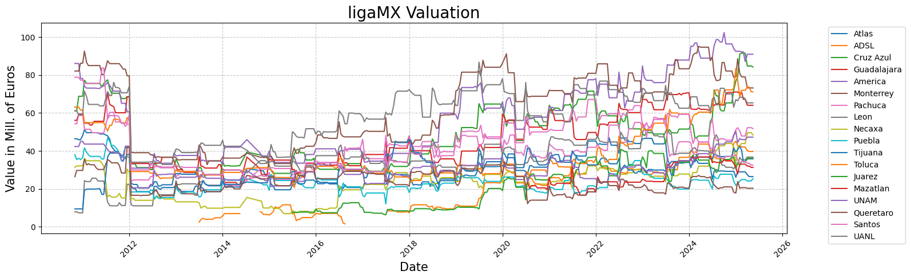

A Brief Analysis of the Market Value of Liga MX Teams from 2011 to the Present
What is the value of a soccer team? And what about in the Mexican league? At first, the concept of a team's market value might seem ambiguous, but once we take a closer look, it becomes easier to grasp since the underlying ideas are actually quite simple.
In this analysis, I relied on data from transfermakt.com. To understand the approach behind these valuations, it's important to consider how Transfermarkt defines “market value.” According to the site, a variety of factors are taken into account, with much of the process based on the collective criteria of its community. For more details on how this methodology works, you can check their official explanation at transfermarkt.co.in/transfermarkt-market-value-explained-how-is-it-determined-/view/news/385100.
In the end, the info published by our source is one that varies through time, it becomes the dataset of this work to look for the expected insights.
Methodology used
All valuations were gathered manually from transfermarkt.mx/liga-mx-apertura/marktwerteverein/wettbewerb/MEXA/. Taking advantage of the recorded dates, a comprehensive dataset was created, with most valuations registered twice a month at 15-day intervals since 2011.
Using Python tools such as NumPy and pandas, charts and indicators were created to make the information easier to understand, thus facilitating the analysis and discovery of insights.
In this post, the focus will be on visualizing the evolution of market valuations among Liga MX teams over time since 2011, examining the distribution of the total value, and reflecting on the clubs that have consistently dominated as well as those that have experienced significant shifts in their valuation
Main insights
Starting with the main chart, let's take a look at the overall bevahior of the market valuations since 2011.
Let's connect!
Links of my socials on the next icons